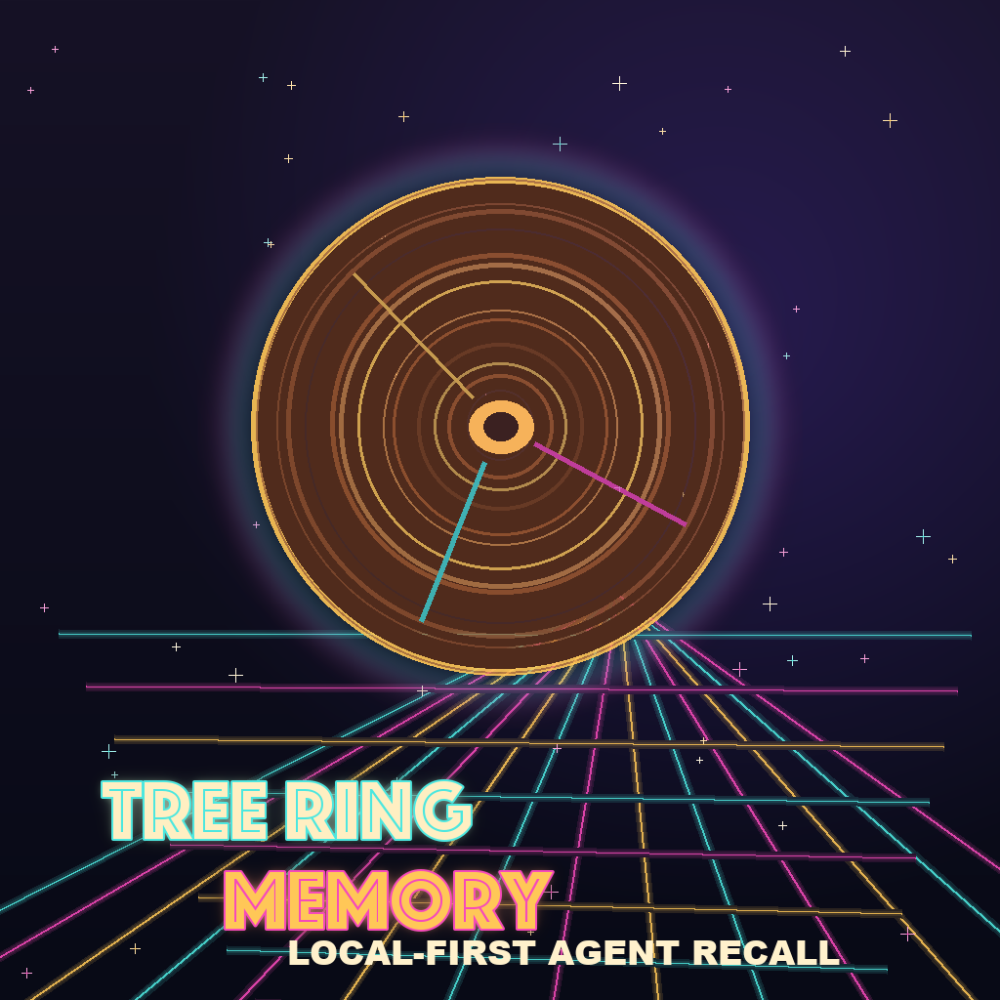

Local-first agent memory
Tree Ring Memory Framework
A framework-agnostic memory lifecycle layer for AI agents.

Fresh memory stays detailed. Durable truths become heartwood.terminallylazy.github.io/Tree-Ring-Memory
The problem
Agent memory usually fails two ways.
It forgets useful work between runs.Prior decisions, warnings, and preferences disappear.
It stores raw transcript sludge.Too much context becomes less useful over time.
Memory needs a lifecycle.Tree Ring Memory
The model
Memory should age like rings.
CambiumFresh active context.
Outer / InnerOlder learning compresses.
HeartwoodDurable high-confidence truths.
ScarsFailures worth remembering.
SeedsFuture hypotheses.
ForgettingRedact, delete, expire, supersede.
The point is lifecycle, not hoarding.Tree Ring Memory
What ships now
Rust-native, local-first runtime.
CLI + SQLite/FTSLocal durable storage and explainable recall.
Audit + maintenanceSensitive, stale, superseded, and low-confidence checks.
Deterministic consolidationCompress older learning without requiring an LLM.
DOX/Revolve adaptersSource-linked memory from project contracts and evidence records.
Framework-agnostic by design.github.com/TerminallyLazy/Tree-Ring-Memory
Try it locally
Install, remember, recall, record evidence.
The first workflow is intentionally boring: initialize local memory, store one concise lesson, and recall it.
curl -fsSL https://raw.githubusercontent.com/TerminallyLazy/Tree-Ring-Memory/main/install.sh | sh tree-ring init tree-ring remember "Use project-scoped recall before risky changes." \ --event-type lesson \ --scope project tree-ring recall "risky changes" tree-ring evidence "The eval passed after the fix." \ --outcome promoted \ --evidence-ref evals/run-042
Use evaluated outcomes for heartwood and scars.tree-ring evidence
Privacy boundary
No hidden transcript recorder.
Local-first by defaultNo required hosted service.
Explicit durable writesRemember, evidence, import, maintenance, TUI action, or deliberate agent action.
Sensitive data fails closedAudit, redaction, deletion, and supersession are part of the product.
Source remains authoritativeMemory is a recall aid, not a replacement for tests, docs, or evidence.
Memory quality should be testable.Tree Ring Memory
Launch feedback
What should portable agent memory get right?
Which agent frameworks need bridge support first?
What should explainable recall show by default?
Where is the ring model too simple or too heavy?
What makes the first ten minutes hard?
Try it, break it, tell us what feels wrong.github.com/TerminallyLazy/Tree-Ring-Memory/issues/26